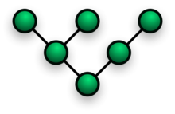
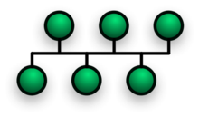

| nome | descrizione | immagine |
| reti a stella | Nella topologia a stella, tutti i nodi sono collegati, tramite un tratto dedicato, a un dispositivo centrale, chiamato hub che ha funzionalità di instradamento di tipo diffusivo o broadcast verso tutti gli altri terminali oppure selettivo o commutativo verso la sola destinazione desiderata. Nel caso delle reti dati, esso quindi può essere un router, un hub ethernet, uno switch o un altro nodo, mentre nelle reti di telefonia può essere un nodo di distribuzione e aggregazione del traffico. Ogni nodo della stella per poter comunicare con l'altro deve inviare il segnale attraverso il nodo centrale che lo smisterà al destinatario. Il numero di canali è uguale al numero di nodi meno uno (c=n-1). I vantaggi di questa rete sono l'alta affidabilità e l'alta scalabilità[1]. L'unico punto debole della rete è l'hub: se si guasta, tutta la rete cessa di funzionare. La funzionalità non risulta però dipendente dai singoli nodi o dai singoli tratti, inoltre, è possibile aggiungere o togliere nodi e connessioni senza modificare la rete, fino al massimo previsto dall'hub. Un'ulteriore vantaggio che presenta questa topologia è rappresentato dal fatto che è possibile collegare tra di loro due reti stella, collegando quindi due hub. Questo aumenta il livello di scalabilità e in caso di guasto di un hub una parte della rete rimarrà attiva. La larga diffusione di questa rete nell'ambito delle reti di calcolatori è dovuto, oltre ai vantaggi di scalabilità e sicurezza, al basso tasso di traffico in caso di utilizzo di hub intelligenti, in grado di smistare il traffico controllando il destinatario. Se l'hub è solo un replicatore, la topologia a stella degenera di fatto a livello logico in una rete a bus. |  |
| reti semplice | Nelle reti lineari, spesso chiamate anche daisy-chain, ogni nodo è collegato in serie con il nodo successivo. Questa tipologia possiede considerevoli svantaggi, primo tra tutti la scarsissima affidabilità: se un nodo si guasta o un ramo si interrompe, la rete viene divisa in due sottoreti isolate. La scalabilità comporta un'interruzione dell'attività di rete per aggiungere o eliminare un nodo in una posizione intermedia della catena. Per questi motivi la topologia lineare rimane confinata in un ambito periferico, sostanzialmente per il collegamento di nodi terminali verso strutture di rete più complesse (spur). | |
| ad anello | Una topologia ad anello è costruita in maniera simile alla precedente, con la testa e la coda connesse tra loro a formare un anello. Le topologie ad anello sono molto diffuse per via dell'alta tolleranza/robustezza ai guasti dato che l'informazione trasmessa può viaggiare in entrambi i versi/sensi dell'anello per raggiungere una certa destinazione. Nel campo delle reti di computer, le più diffuse implementazioni della rete ad anello sono la Token ring e la Token bus. Nel caso delle reti telefoniche, le strutture ad anello vengono usate per la distribuzione e aggregazione del traffico sia su area metropolitana che su area regionale, oltre che per collegamenti di lunghissima distanza come le reti sottomarine transcontinentali. |  |
| Reti mesh o magliate |
Le reti mesh o reti magliate si dividono in magliate completamente connesse e magliate non completamente connesse: nelle prime ogni nodo è connesso a tutti gli altri nodi presenti in rete tramite tanti canali quanti sono i nodi a cui è connesso, mentre nelle seconde non sono presenti tutti i rami teoricamente possibili. Questo tipo di rete richiede costi elevati ma presenta un’alta affidabilità dato che, a fronte del guasto di uno o più nodi o rami, risulta possibile identificare percorsi alternativi che aggirano i punti di guasto. Nell'ambito delle reti telefoniche, la struttura magliata viene usata tipicamente per le dorsali di traffico, per consentire la connettività completa tra tutte le sottoreti regionali e metropolitane. Anche la rete Internet si appoggia a una struttura magliata, di tipo non completamente connesso |
 |
| Reti ad albero | Questo tipo di topologia è una variante di rete magliata non completamente connessa, che si può modellizzare anche come un insieme di reti a stella interconnesse tra loro in modo gerarchico. Nodi e canali sono disposti in modo ramificato; questa topologia è la preferita per le reti WAN anche perché comporta costi minori, tuttavia se si guasta un canale o un nodo viene compromessa la funzionalità di parte della rete o dell'intera rete (se si è guastato il nodo o il canale d'origine). Su questa topologia di rete si basa Internet. |  |
| Reti a bus | Tutti i nodi sono collegati tra di loro per mezzo di un bus, cioè un canale che possiede due estremità e n accessi ad esso. Le due estremità sono chiuse con dei terminatori. Questa topologia è molto usata nelle reti dati: la rete Ethernet nelle sue versioni iniziali thickwire e thinwire, era fisicamente strutturata a bus, poi, con l'avvento dei cablaggi in doppino, la topologia fisica è diventata a stella (multistella). In questo tipo di reti in virtù della presenza di un collegamento condiviso tra più utenti terminali sono necessari meccanismi di accesso multiplo/multiplazione che evitino le collisioni o interferenza tra pacchetti appartenenti a comunicazioni diverse tra vari utenti. In generale questo è sempre vero nelle reti reali, sia locali che metropolitane che geografiche laddove una rete a maglia completa spesso non è di fatto realizzabile al di sopra di un certo numero di host o sottoreti da connettere per ovvi motivi di costo. Fanno eccezione a volte i collegamenti delle dorsali dove per motivi di ridondanza e numero ridotto di nodi da interconnettere è possibile realizzare una topologia a maglia completa. |  |
Topologie multipunto-multipunto |
Considerazioni | Le topologie di rete sopra esposte sono tipiche delle reti locali, scelte in base ad esigenze o particolari vincoli progettuali. Le reti di grandi dimensioni come la rete telefonica e la rete Internet in quanto interconnessioni di segmenti di rete che giungono fino all'utente finale, comprendendo quindi le reti locali, hanno invece una topologia di rete di tipo capillare fino agli utenti e suddivisa tipicamente in rete di accesso e rete di trasporto. |